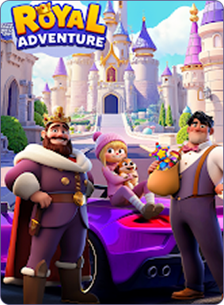
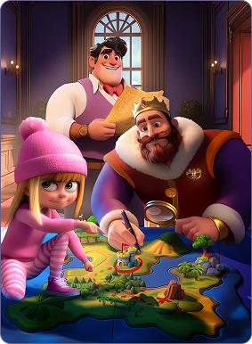

A fantasy puzzle journey
filled with exploration and rewards

So basically, you're playing match-3 puzzles while fixing up this old castle, there's actually a pretty decent story running through it all. Players complete colorful puzzle levels to unlock new palace areas, repair royal gardens, and uncover hidden mysteries connected to the ancient kingdom. We wanted something that just feels good to play, you know, satisfying without being stressful. Every completed renovation makes the kingdom feel more alive and fun, giving players a constant and enjoyable sense of progress and discovery.
